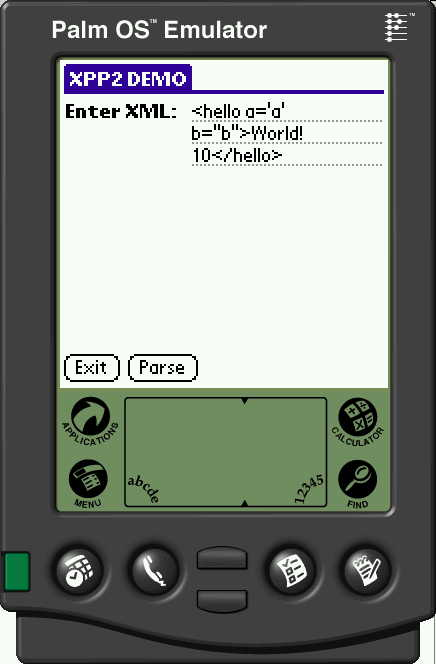
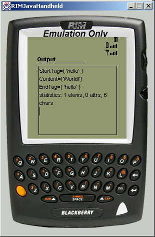
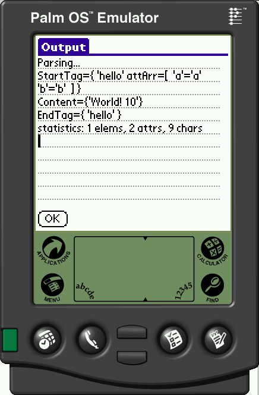

Precompiled midlet JAR/JAD and Palm PRC are in build/j2me directory - see below for some screenshots.
It will require to start emulator and pass to it location of count mildlet JAD file (that points to JAR file)
Following command line can be used
(modify to point to you J2MEWTK location)
c:\jdk1.3.1\bin\java -Dkvem.home=d:\J2mewtk -cp d:\J2mewtk\wtklib\kvem.jar;d:\J2mewtk\wtklib\kenv.zip;d:\J2mewtk\wtklib\lime.jar com.sun.kvem.midp.Main i85s -descriptor build\j2me\count_midlet.jad
try also to use other emulators instead of i85s skin (like RIMJavaHandheld) see few examples below.
Following command line can be used to run midlet in Palm OS Emulator (POSE)
- make sure to modify to point to you J2MEWTK location:
c:\jdk1.3.1\bin\java -Dkvem.home=d:\J2mewtk -cp d:\J2mewtk\wtklib\kvem.jar;d:\J2mewtk\wtklib\kenv.zip;d:\J2mewtk\wtklib\lime.jar com.sun.kvem.midp.Main PalmOS_Device -descriptor build\j2me\count_midlet.jad
and when it ask for POSE point it to location where is installed PalmOS Emulator that has Java runtime from MIDP4PALM installed.
NOTE: Palm must have at least 4MB of RAM but i have only run this sample with 8MB (and 2MB is definitely too small...).
NOTE: XPP2 distribution already contains JAR files and precompiled samples so building is not necessary unless you make changes to XPP2.
I have included slightly modified Stampysoft Ant Tasks (written by Josh Eckels). Make sure to add it to CLASSPATH (and have already set as described in build document).
set CLASSPATH=%CLASSPATH%;lib\StampysoftAntTasks_Alek.jar
Modify build.xml to include J2MEWTK instalation location
<property name="j2mewtk.home" value="d:/j2mewtk" />
Now build can be performed:
ant j2me
Make sure to build midlet succesfully with J2MEWTK (see above).
Modify build.xml to include MIDP4PALM instalation location
<property name="midp4palm.home" value="D:\palm\midp4palm1.0\Converter" />
Then you can start build:
ant palm

Example of XML entered into Motorola i85s and Palm m500 emulator:

and parsing result displayed on Motorola and RIM Java Handheld:

and on Palm as well:
And second example with invalid input
resulting in parsing error
[Back To Pull Parser 2 Documentation]